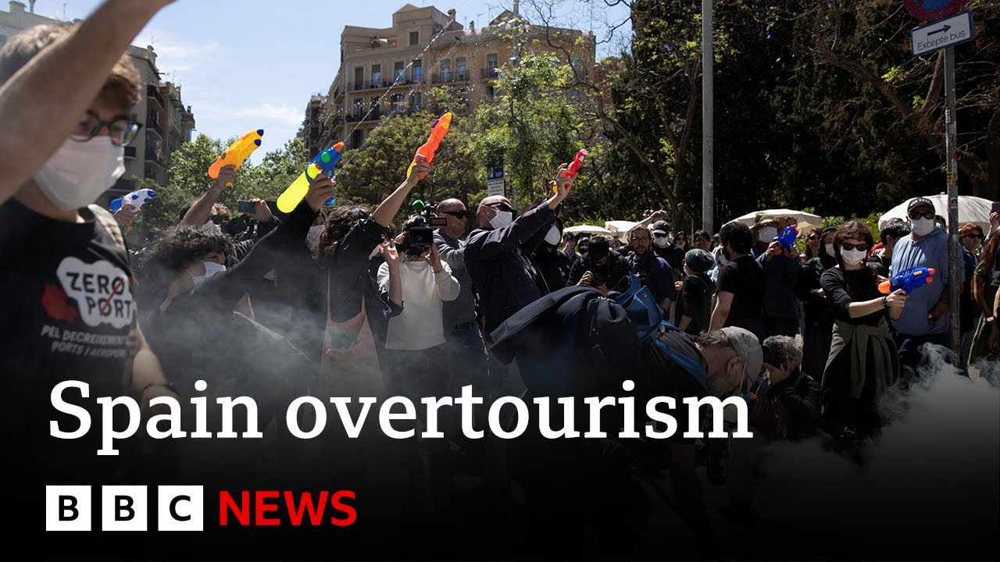

【西班牙全国爆发反旅游抗议活动 | BBC新闻】
Summary: Anti-tourism protests in Spain escalate as locals blame tourists for rising housing costs, though businesses fear economic losses.
摘要： 西班牙反旅游抗议升级，当地人指责游客推高住房成本，但企业担忧经济损失。

⏱️ Estimated Reading Time: 8 min
📚 六级生词 📚 雅思生词 📚 托福生词 📚 专八生词 📚 SAT生词 📚 考研生词 📚 GRE生词 📚 高考生词
Now, last year's anti-tourism protests in Europe drew global headlines.
去年欧洲的反旅游抗议活动曾登上全球头条。
This summer, the tensions are back with more protests.
今年夏天，紧张局势再度出现，抗议活动增多。
Earlier this week, locals in Spain have been shooting water guns at visitors, saying a flood of summer visitors is driving up housing costs in their cities and pushing out the locals.
本周早些时候，西班牙当地人用水枪射击游客，称夏季游客激增推高了城市住房成本，并挤走了本地人。
However, many local residents and businesses are concerned that tourists may be frightened away.
然而，许多当地居民和企业担心游客可能会被吓跑。
Simon Browning reports from Morca.
西蒙·布朗宁在莫卡报道。
Touchdown Morca.
抵达莫卡。
Summer 2025 is on.
2025年夏季即将到来。
Airport where the local time is 10.
机场当地时间是10点。
The mass migration south for sun, sea, and sight is underway.
人们为阳光、海洋和景点大规模南迁的旅程已经开始。
Um, the businesses survive on tourism, but unrest remains in our favorite paradise.
嗯，企业依赖旅游业生存，但我们最爱的天堂仍不安宁。
Like everything has gone like mad.
就像一切都疯了似的。
Protesting against tourism on Spain's streets is back and the holiday industry is starting to worry.
西班牙街头反对旅游的抗议活动卷土重来，度假产业开始担忧。
Spanish people love tourism.
西班牙人热爱旅游业。
How tourism impacts the people who live where we visit is key.
旅游业如何影响我们到访地的居民是关键问题。
The main problem of Mayoran right now is not the tourism, it's the consequences and housing is at its core.
马略卡目前的主要问题不是旅游业，而是其后果，住房是核心。
The issues of over tourism are so pertinent here in Palmer.
过度旅游的问题在帕尔马非常突出。
I've just been walking through the streets and chanced upon this protest.
我刚刚走过街道，偶然遇到了这场抗议。
This tent, it represents the main problem we have here in the Balaric Islands, especially in Palma.
这个帐篷代表我们在巴利阿里群岛，尤其是帕尔马的主要问题。
Uh we have very we have a lot of problems to to can afford a rent.
呃，我们有很多问题，难以负担租金。
If you have to pay this in a rent, uh it's more than your salary.
如果你必须支付这样的租金，呃，这超过了你的工资。
It's impossible to ask.
这根本不可能。
A hot issue for the local press.
这是当地媒体的热点问题。
How the surge in visitors and a boom in Airbnbs and illegal holiday apartments is making it hard for locals to find somewhere to live through the busy streets to the government building.
游客激增以及爱彼迎和非法度假公寓的繁荣，使得当地人难以在繁忙的街道和政府大楼附近找到住所。
Good to see you.
很高兴见到你。
Thanks for having me.
谢谢邀请。
Thanks.
谢谢。
So tell me where we are.
告诉我我们在哪里。
We're just like in front of the parliament of Fan is an environment minister in the Boleric government.
我们就在议会前面，范是波利克政府的环境部长。
Mass tourism is key to his brief.
大众旅游是他的职责重点。
It's about the feeling of being an outsider in your own place in the sense that uh the city has no longer services for locals.
这是关于在自己地方感到像外人的感觉，因为城市不再为本地人提供服务。
Do you feel that there are simply just too many flights arriving here in Morca and in the rest of Spain?
你是否觉得莫卡和西班牙其他地方的航班太多了？
They're growing it because they want to operate at higher capacity in summer which is completely we we cannot cope with that many people on the island.
他们增加航班是因为想在夏季以更高容量运营，但我们完全无法应对岛上这么多人。
This is Sineu, a small town right in the heart of Morca.
这是西尼乌，莫卡中心的一个小镇。
Far from the popular coastal resorts, but there's still tourism here.
远离热门海滨度假区，但这里仍有旅游业。
There's plenty of holidaylets and also a growing number of hotels.
这里有很多度假屋，酒店数量也在增加。
And I going to show you the breakfast room.
我带你们看看早餐室。
Last year, Jose's hotel was graffitied by protesters.
去年，何塞的酒店被抗议者涂鸦。
He sympathizes with their cause.
他同情他们的诉求。
Mass tourism is putting huge pressure on the island's resources like power and water.
大众旅游给岛上的资源如电力和水带来巨大压力。
Are you are you going to make another dissulted plant?
你们要再建一个海水淡化厂吗？
Are you going to make another highway because this highway is getting is getting too too small?
你们要再建一条高速公路吗？因为这条高速已经太小了。
Okay, is you're going to solve the problem in maybe a few years, but in in 5 years time you you will have to make another highway and two other hospitals.
好吧，你们可能在几年内解决问题，但5年后你们还得再建一条高速和两家医院。
It's no surprise that Spain is the UK's favorite holiday destination.
西班牙是英国人最爱的度假目的地并不奇怪。
Just look at it.
看看这里。
And here in Palmanov in Morca, the restaurant owners and bars are keen to make sure that Brits know that it's still open for tourism regardless of those protests.
在莫卡的帕尔马诺瓦，餐馆和酒吧老板急切想让英国人知道，尽管有抗议，这里仍对旅游开放。
Resorts like this filled with bars, restaurants, and shops were built for our holidays.
像这样充满酒吧、餐馆和商店的度假区是为我们的假期而建的。
Spain's economy has done very well from them.
西班牙经济因此受益匪浅。
Very few protests happen here.
这里很少发生抗议。
Of course, I would tell them, don't be afraid.
当然，我会告诉他们，别害怕。
Come come to us.
来我们这里。
We thrive off of having you.
我们因你们而繁荣。
We need we need the British tourism.
我们需要英国游客。
Yeah.
是的。
Everyone's still welcome.
每个人仍然受欢迎。
Yeah, of course.
当然。
Of course, everybody's still welcome.
当然，每个人仍然受欢迎。
We we want you here.
我们希望你们在这里。
We want to give you the best holiday experience.
我们想给你们最好的假期体验。
So, yeah, don't be afraid of the of what you see in the newspaper.
所以，别害怕报纸上看到的。
Not everything is what it seems.
并非所有事情都像看起来那样。
Ambassador, tell me about how busy that flight route is between the UK and Spain.
大使，告诉我英国和西班牙之间的航班有多繁忙。
Well, Simon, um it's the highest air connectivity in the world.
西蒙，这是世界上航空连通性最高的航线。
Spain anticipates 100 million visitors this year, a record.
西班牙预计今年将有1亿游客，创纪录。
its ambassador to the UK is keen to stress protests are small and do not represent the view of the Spanish people.
西班牙驻英国大使强调抗议规模小，不代表西班牙人民的观点。
What does the Spanish government want to say to those people that were squirted with water pistols in cafes on Sunday who've paid to come to Spain to eat your food, drink your coffee, drink your beer, enjoy the sights, and they're met with being sprayed with water pistols.
西班牙政府想对那些周日被水枪喷射的人说什么？他们花钱来西班牙吃你们的食物、喝咖啡、喝啤酒、欣赏景点，却被水枪喷射。
Well, all I can say is that we are awfully sorry and that it doesn't represent at all the feeling in Spain.
我只能说我们非常抱歉，这完全不代表西班牙的感受。
You know how well tourists are treated in Spain in general and British people uh particularly the atmosphere in Spain is not hostile at all.
你知道游客在西班牙通常受到多好的待遇，尤其是英国人，西班牙的氛围一点也不敌对。
On the contrary, it is as as friendly as ASVA and we are working hard as you know now not on making numbers grow.
相反，它非常友好，我们现在正努力，如你所知，不是让数字增长。
We don't want numbers to grow.
我们不希望数字增长。
We want uh satisfaction to grow in in Spain.
我们希望西班牙的满意度增长。
The Spanish government has begun tighter regulation of holiday flats.
西班牙政府已开始更严格监管度假公寓。
The tourist industry is bitter about the damage rentals have done.
旅游业对租赁造成的损害感到不满。
A long hot summer is ahead.
漫长炎热的夏天即将到来。
Simon Browning, BBC News in Morca.
西蒙·布朗宁，BBC新闻，莫卡报道。